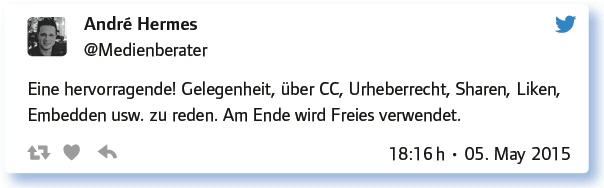

von Elke Höfler
Das Urheberrecht betrifft uns alle, egal, ob wir on- oder offline Materialien erstellen, nutzen oder teilen. Sind wir mal ehrlich: Im Alltagsgeschäft nehmen wir das Risiko einer Urheberrechtsverletzung in Kauf – sei es aus Zeitmangel, Unkenntnis oder weil „eben gerade kein passenderes Material zur Hand war“ – vor allem aber, weil man Unterrichtsmaterialien heute sehr leicht digital remixen und bereitstellen kann. Auch Lernende wollen sehr gerne Bilder oder Videos oder Musik nutzen, die sie online finden und daraus kreativ eigene Medienprodukte erstellen und wieder online zur Verfügung stellen. Und dann sind da noch diejenigen, die schon lange ihre Arbeit unter freien Lizenzen zur Verfügung stellen und dann plötzlich feststellen müssen, dass man sich derer bedient, ohne sie als Urheber/in namentlich zu nennen.
Brauchen wir denn ein „neues Urheberrecht“? Müssen wir alle umdenken, auch die Urheber/innen? Sollten wir heute nicht endlich die Möglichkeiten des Netzes nutzen, alle gemeinsam unser Wissen und unsere Ergebnisse zu teilen, um daraus wirklich Großes entstehen zu lassen? Oder ist das nur eine Traumvorstellung, die mit der Realität nichts zu tun hat? Fragen dieser Art wurden in dieser Ausgabe des #EDchatDE diskutiert.
Wie sieht das denn aus mit dem Urheberrecht? Was darfst du kopieren oder digitalisieren, welche Filme zeigen, welche Musik abspielen?
Bereits die erste Frage zeigte die Verzweiflung und Unsicherheit der Teilgeber/innen, die sich zwar vielleicht sogar täglich mit dem Thema beschäftigen, aber dennoch keine Sicherheit in ihrem Tun haben:
Kopieren nur 20 % des Werkes aber maximal 11 (?) Seiten. Abspielen nur unter Auflagen, die ich nicht kenne. Das alles ist sehr verwirrend.
Das hat die VG-Wort mit den Verlagen doch gut ausgehandelt. Die üblichen 12 % dürfen zitiert werden, aber keine Ganzschriften etc.
Nicht mehr als 12 % dürfen übernommen werden, wenn ich mich (ohne nachzuschauen) erinnere. – Mein neuer Wert ist aber 10 %, dafür auch digitale Nutzung möglich.
Und schnell kam das Thema zu Open Educational Resources (OER) als Lösung:
OER darf ich kopieren :-). Von anderem wenig und auch nur, solange ich eine „Totholzkopie“ verteile. Digital geht wenig. :-(
Bilder unter freier Lizenz nutzen – weit verbreiteter Fehler, siehe hier: http://t.co/pPVUrrdkj4
Ist es vorstellbar, dass Lehrer sich nicht strikt an die Regeln halten wollen, da sie sonst nicht optimal arbeiten könnten?
Die Teilgeber/innen waren sich einig, dass es nur wenige Lehrer/innen gibt, die sich mit dem Thema beschäftigen, die sich der Situation bewusst sind und die die nötige Zeit haben:
Nicht jeder Lehrer ist sich bewusst über die genauen Gesetze bezüglich des Urheberrechts, da dieses recht umfangreich und unübersichtlich ist.
Ich behaupte sogar, das KEIN Lehrer, der nicht zugleich Urheberrecht studiert hat, weiß, was er darf und was nicht.
Es ist die Frage, ob jeder Lehrer alle Regeln im Kopf hat, oder sich im stressigen Alltag daran hält? http://t.co/8wuVfNOmo2
Wenn man ohne Kopien bzw. Remix auskommen will, muss man sein Material selbst erstellen. (Und wer hat dazu Zeit?)
Ein schlechtes Gewissen haben nur Kollegen, die gerade bei einer Fortbildung zum Urheberrecht waren #ruthless.
Du kennst das: Die Schüler wollen ein Video, Musik oder Bilder remixen und dann veröffentlichen. Das Copyright sagt nein! Und nun?
In dieser Situation waren viele Lehrpersonen sicher schon einmal. Und alle waren sich einig, die Veröffentlichung zu verbieten. Die Lösungsvorschläge waren dazu jedoch spannend und gingen in die Richtung Aufklärungsarbeit und Sensibilisierung für die Thematik:

Tipps für das Klassenzimmer und den konkreten Unterrichtsfall durften in der Diskussion nicht fehlen. Manchmal hilft es einfach, den/die Urheber/in zu kontaktieren:
Wie hältst du es selbst mit dem Copyright? Sind deine Veröffentlichungen unter cc oder/und ©? Warum?
Viele Lehrende scheuen sich, Materialien unter CC zu stellen, weil die Rechtssicherheit in ihren Augen nicht gegeben ist und sie keine Fehler begehen möchten. Bei den Teilgebern sieht es anders aus, wenngleich mit Einschränkungen:
Das hängt vom Ausgangsmaterial ab. CC ist immer das Ziel, geht aber nicht immer. Wir brauchen eine Bildungsschranke im UrhG.
CC natürlich! Also … eigentlich …, denn trotz massiver Affinität zu OER gibt es Hinderungsgründe: http://t.co/hcuCCPs7y1
Einige versuchen dabei sogar, möglichst offen zu lizenzieren, beispielsweise unter CC0 (CC Zero) oder WTFPL (Do What The Fuck You Want To Public License):
Wo möglich CC0, also gemeinfrei. Wo remixed, nach Ursprungslizenzierung unter CC. Immer jedoch frei!
Ich würde gern unter WTFPL veröffentlichen, aber anscheinend wird mir das Urheberrecht zwangsauferlegt: http://t.co/6kjN682pRc
Antworte auf 3 Tweets unterschiedlicher Teilgeberinnen a) zustimmend, b) kritisch, c) provozierend.
Neben zahlreichen Tipps und Tricks, die im Gesamtprotokoll nachzulesen sind, wurden auch einige kritische Stimmen laut:
Deine Protipps: Wo findet man cc-Musik, -Videos, -Bilder? Mit Link bitte!
Jede Lehrperson hat eigene (geheime) Schatzkisten, die sie öffnet, wenn es um Materialien geht, die unter CC-Lizenzen stehen. Hier wurden einige verraten, die vollständige Liste ist dem Protokoll zu entnehmen:
Schule: Schöne Zusammenstellung für die Verwendung von Musik/Tönen. Lesenswert dazu: https://t.co/1QuqwKZ1Sn
Einige meiner Quellen: #EduSlack http://t.co/SvgqoAZyz7
Meine Sammlung zu OER auf meinem Blog: http://t.co/g5rk3HbWfC
Wie kann das Urheberrecht neu gestaltet werden, damit es für künftige Urheber im digitalen Zeitalter des Teilens funktioniert?
Eine visionäre Frage, die vor allem eines brachte: den Wunsch in der Bildung oder zu Bildungszwecken mehr Freiheiten zu haben. Und ein gesteigertes Bewusstsein für die Thematik im Allgemeinen:
CC-Lizenzen sollte im Bildungsbereich mehr Bedeutung geschenkt werden.
Eine Bildungsschranke würde schon viel helfen, dann könnte man ohne Angst in der Schule Fehler machen und daraus lernen.
Das Urheberrecht sollte übersichtlicher, verständlicher formuliert und in der Komplexität reduziert formuliert sein.
Wir brauchen einen OER-Booster und Verlage könnten faire (digitale) Nutzungsrechte einräumen. Dann braucht man gar kein neues UR.
Welche Anregungen, Fragen hast du sonst noch zum Thema Urheberrecht?
Einen schönen Schluss liefern die folgenden beiden Tweets, die das Thema abrunden und nicht nur von Verbot und Erlaubnis ausgehen, sondern auch dem Dazwischen:
Fazit:
Das Urheberrecht (und verwandte Rechte wie Nutzungsrechte) sind im schulischen Alltag, wie diese Ausgabe des #EDchatDE gezeigt hat, ein heiß diskutiertes Thema, das auch für Unsicherheiten und somit Einschränkungen in der Lehre sorgt. Wer keine Verletzungen des UrhG begehen will, muss sich an traditionelle Medien (wie das Schulbuch) halten oder viel Zeit in die Erstellung eigener Materialien stecken. Doch was steht dazwischen? Die Diskussion hat gezeigt, dass es zwischen den beiden Extrempunkten viele Schattierungen gibt. Und eines scheint klar: Eine Sensibilisierung für die Thematik muss schon in der Schule beginnen und Lehrer/innen und auch Eltern sollten sich ihrer Vorbildfunktion bewusst sein.
Weiterführende Informationen:
Blogpost zur 77. Ausgabe des #EDchatDE: https://edchatde.wordpress.com/2015/05/04/zur-vorbereitung-des-77-edchatde-urheberrecht-mit-einem-bein-vorm-kadi/
Link zum vollständigen Protokoll: